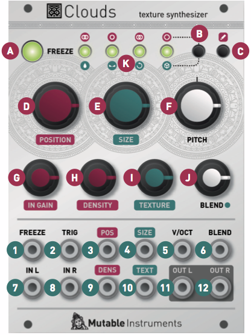

Overview
Clouds is a granular audio processor. It creates textures and soundscapes by combining multiple overlapping, delayed, transposed and enveloped segments of sound taken from an audio recording buffer.
Clouds differs from other granular Eurorack modules in that it focuses on the real-time processing of audio sources from your modular system itself, rather than the playback of pre-recorded samples from a storage device. It rewards the freezing, fragmentation and dissolution of the unexpected instant, rather than the careful planning of what might very well not come.
Installation
Clouds is designed for Eurorack synthesizer systems and occupies 18 HP of space. It requires a -12V/+12V supply (2x5 pin connector), drawing 10mA from the -12V rail and 120mA from the +12V rail. The red stripe of the ribbon cable must be oriented on the same side as the "Red stripe" marking on the printed circuit board.
About Granular synthesis
Clouds continuously records the incoming audio into a short amount of sample memory. While recording time can reach up to 8s by reducing the audio quality setting, you ought to feel very guilty every time you think of this as "tape" - think of it as a space, a room. Using this recorded audio data, the module synthesizes a sonic texture by playing back short (overlapping) segments of audio (also known as "grains") extracted from it.
Clouds allows you to control:
- From which part of the buffer the grains are taken.
- How long the grains are.
- At which speed/pitch the grains are replayed.
- How much overlap there is between the grains (density).
- Whether the distribution of grains in time is constant or random.
- Which envelope curve is applied to the grains - giving the impression of a "rough" or "smooth" texture. In addition, to create textures with a "blurry" feel, a diffuser (network of all-pass filters - like a reverb without tail) can be applied.
The module plays grains continuously, at a rate determined by the DENSITY and SIZE settings. A trigger input is also present, to explicitly instruct the module to start the playback of a new grain. The maximum number of concurrent grains is quite large - between 40 and 60. This specificity brings Clouds closer to the roots of granular synthesis, and allows the synthesis of varied textures even from basic waveforms - there's indeed many more dimensions to granular synthesis than keeping a playback pointer moving through a SD-card sample!
It is possible, at any time, to FREEZE the audio buffer from which the grains are taken - In this case, the incoming audio is no longer recorded. Somehow, Clouds is the exact opposite of a sampler: by default, the module always samples the audio it receives, except when it is in the frozen state.
Front panel
Controls

A. FREEZE button. This latching button stops the recording of incoming audio. Granularization is now performed on the last few seconds of audio kept in memory in the module.
B. Blending parameter/Audio quality button. Selects which of the blending parameters is controlled by the BLEND knob and CV input, or selects one of the four audio quality settings.
C. Load/Save button. See the "Advanced topics" section.
D. Grain POSITION. Selects from which part of the recording buffer the audio grains are played. Turn the knob clockwise to travel back in time.
E. F. Grain SIZE and PITCH (transposition). At 12 o'clock, the buffer is played at its original frequency.
G. Audio INPUT GAIN, from -18dB to +6dB.
H. Grain DENSITY. At 12 o'clock, no grains are generated. Turn clockwise and grains will be sown randomly, counter-clockwise and they will be played at a constant rate. The further you turn, the higher the overlap between grains.
I. Grain TEXTURE. Morphs through various shapes of grain envelopes: square (boxcar), triangle, and then Hann window. Past 2 o'clock, activates a diffuser which smears transients.
J. BLEND knob. This multi-function knob is described in the Blending parameters section.
K. Indicator LEDs. They work as an input vu-meter. When FREEZE is active, they monitor the output level. Soft-clipping occurs when the last LED is on. They can also indicate the quality setting (red), the function assigned to the BLEND knob (green), or the value of the four blending parameters (multicolor).
Inputs and outputs
All CV inputs are calibrated for a range of +/- 5V. Voltages outside of this range are tolerated, but will be clamped.
1. FREEZE gate input. When the input gate signal is high, stops the recording of incoming audio, just as latching the FREEZE button would do.
2. TRIGGER input. Generates a single grain. By moving the grain DENSITY to 12 o'clock, and sending a trigger to this input, Clouds can be controlled like a micro-sample player. An LFO or clock divider (or even a pressure plate) can thus be used to sow grains at the rate of your choice.
3. 4. Grain POSITION and SIZE CV inputs.
5. Grain transposition (PITCH) CV input, with V/Oct response.
6. BLEND CV input. This CV input can control one of the following functions depending on the active blending parameter: dry/wet balance, grain stereo spread, feedback amount and reverb amount.
7. 8. Stereo audio input. When no patch cable is inserted in the right channel input, this input will receive the signal from the left channel.
9. 10. Grain DENSITY and TEXTURE CV inputs.
11. 12. Stereo audio output.
Blend parameters
The BLEND knob can control one of these four settings:
- Dry/wet balance.
- Stereo spread (amount of random panning/balance applied to the grains).
- Feedback amount.
- Reverberation amount.
To select which parameter is controlled by the BLEND knob and the BLEND CV input, press the Blend parameter/Audio quality button. The current parameter is temporarily indicated by a green LED.
When turning the BLEND knob, the color of the four status LEDs temporarily shows the value of the four blending parameters (from black when the parameter is set to its minimum value to green, yellow and then red for the maximum value).
It could happen that the position of the knob does not match the value of the parameter - the curse of multi-function knobs! If this is the case, turning the BLEND knob clockwise (resp. counterclockwise) causes a small increase (resp. decrease) in the value of the parameter, and turning it further causes larger changes, until the value progressively catches up with the knob's position.
There are a few things worth knowing about these settings:
- All settings are automatically saved, and will be restored the next time the module is powered on.
- Strange things happen when FREEZE is enabled. Because feedback/layering can no longer occur in the recording buffer (hey, it's frozen...), we route the output signal through delays and all-pass filters, and let the feedback build-up occur in this extra recording space - giving the sound a very reverb-like nature.
Advanced topics
Audio quality
Hold the Blend parameter/Audio quality button for one second, then press it repeatedly to choose a recording quality. The current quality setting is indicated by a red LED.

Note that Clouds' 8-bit is a lovely flavour of 8-bit: µ-law companding. It sounds like a Cassette, or a Fairlight - less hiss, more distortion.
Saving and loading buffers
Up to 4 frozen audio buffers can be saved and reloaded. Along with the audio data itself, the quality settings and the processing mode are saved with it. To save the recording buffer in permanent memory:
- Hold the Load/Save button for one second.
- Press the Blend parameter/Audio quality button repeatedly to select one of the 4 memory slots. The selected slot is indicated by a blinking red LED.
- Press the Load/Save button to confirm.
To load a recording buffer from permanent memory:
- Press the Load/Save button.
- Press the Blend parameter/Audio quality button repeatedly to select one of the 4 memory slots. The selected slot is indicated by a blinking green LED.
- Press the Load/Save button to confirm.
If you press the Load/Save button by mistake, do not press any button for a few seconds and the module will return to its normal state.
Tips and tricks
- If you need a noise source to randomize grain position or pitch, you could do worse than reusing one of the audio outputs. It's certainly not white noise, but it's random enough...
- Scratch and caress a sound by using a contact microphone or a touch strip to trigger grains and modify playback POSITION.
- Very dense clouds sound the best when at least one parameter (pitch or position) receives random modulations. Otherwise, the many identical "echoes" created by the repeating grains will sound like a very resonant feedback comb filter.
- Raw material like sawtooth or sine waves sound very good, especially with heavy random modulation. A fun exercise is to recreate the classic THX sound with a random source and a VCA.
- Send a very fast sequence of 3 or 4 notes to the V/O input, so that each grain (if sown randomly) randomly picks one of those notes. The result? A chord!
- Experiment with capturing many small fragments of sound by sending short pulses to FREEZE while a complex patch is being played through the audio input!
Calibration procedure
The module is factory-calibrated using precision voltage sources. Follow this procedure only if you want to compensate for inaccuracies in your CV sources, or if your module has lost its calibration settings following a fault or the installation of alternative firmware.
To calibrate the unit:
- Disconnect all CV inputs.
- Connect the note CV output of a well-calibrated keyboard interface or MIDI-CV converter to the V/OCT input.
- Press the Load/save button, and while you hold it down, press the Blend parameter/Audio quality button. The first 2 LEDs will blink in orange.
- Play a C2 note, or send a 1V voltage from your CV source.
- Press the Load/Save button. The four LEDs will blink in orange.
- Play a C4 note, or send a 3V voltage from your CV source.
- Press the Load/Save push-button.
- Calibration is done!
Firmware update procedure
Unplug all CV inputs/outputs from the module. Connect the output of your audio interface/sound card to the IN L input. Power on your modular system with the FREEZE push-button pressed. The FREEZE LED will blink.
Make sure that no additional sound (such as email notification sounds, background music etc.) from your computer will be played during the procedure. Make sure that your speakers/monitors are not connected to your audio interface - the noises emitted during the procedure are aggressive and can harm your hearing. On non-studio audio equipment (for example the line output from a desktop computer), you might have to turn up the gain to the maximum.
When you are all set, play the firmware update file into the module. While the module receives data, the bargraph will show the signal level. Signal reception is optimal when two or three LEDs are lit. You can use the IN GAIN knob to boost or reduce the gain. When the end of the audio file is reached, the module automatically restarts - if it is not the case, please retry the procedure.
In case the signal level is inadequate, the LEDs will blink in red. Press the FREEZE push-button and retry with a higher gain. If this does not help, please retry the procedure from another computer/audio interface, and make sure that no piece of equipment (equalizer, FX processor) is inserted in the signal chain.
The infamous alternate modes
In its tumultuous teenage years, Clouds tried to be everything, including a delay/pitch-shifter, a spectral processor, a projectionist and a cab driver in Rouen. This experimental code is still available in the module, by pressing the B button for 5 seconds until one of the LEDs glows in orange, and then repeatedly pressing the button to select one of 4 functions:
- (First LED lit) Granular processor (normal operation).
- (Second LED lit) Pitch shifter/time-stretcher.
- (Third LED lit) Looping delay.
- (Fourth LED lit) Spectral processor.
These features are experimental, and the knobs might be reassigned to functions very different from what is printed on the panel. It is not recommended to use these alternate modes if you plan to let Tony Rolando come play with your system.
Granular mode
Home sweet home.
Pitch-shifter/time-stretcher
This mode is quite similar to the granular mode, except that it uses two overlapping grains synchronized with the most salient period of the sound. The grains are carefully spliced so that they mesh well with each other (a technique similar to the "deglitching" of early pitch-shifters). Modulating POSITION when recording is frozen will "scrub" through the audio buffer. Clouds' uses classic time-domain methods which are not suitable for polyphonic or percussive material (unless this percussive material is breakbeats and you liked Akai samplers. Then: smile).
DENSITY creates a granular diffusion effect based on all-pass filters.
TEXTURE acts as a low-pass/high-pass filter.
SIZE controls the size of the overlapping windows used for pitch-shifting and time-stretching – from an extremely grainy "drilling" sound to smooth bits of loops.
Sending a trigger to the TRIG input creates a clock-synchronized loop (when FREEZE is enabled) or stuttering effect – equivalent to applying a tempo-synchronized decaying envelope on the POSITION parameter.
Looping delay
The looping delay mode continuously plays back audio from the buffer without any kind of granularization.
POSITION controls the distance between the playback head and the recording head (in other words, the delay time). Modulating POSITION will create effects similar to vinyl scratching or manual manipulation of tape.
When FREEZE is activated, the content of the audio buffer is looped (stutter effect). POSITION controls the loop start and SIZE the loop duration. DENSITY creates a granular diffusion effect based on all-pass filters; and TEXTURE acts as a low-pass/high-pass filter.
SIZE controls the size of the overlapping windows used for pitch-shifting – fully clockwise for a smooth result that might smear transients, fully counterclockwise for a grainy, almost ring-modulated sound.
When FREEZE is enabled, sending a trigger on the TRIG input creates a clock-synchronized stuttering loop. Otherwise, the period of the trigger pulses sets the delay time – provided this delay is shorter than the recording buffer size.
Spectral madness
In this mode, the incoming signal is converted into "frames" of spectral data, that are stored, transformed, recombined, and resynthesized as a time-domain signal.
POSITION selects into which buffer the audio is poured (when FREEZE is not active), or from which buffer the audio is synthesised (when FREEZE is active). For example, set POSITION to its minimum value. Press FREEZE. You get a first texture. Set POSITION to its maximum value. UNFREEZE. Wait for something else to happen in the incoming audio. Press FREEZE again. By moving POSITION you interpolate between the two textures which had been captured at the press of FREEZE. Depending on the quality settings there are 2 to 7 buffers laid out over the course of the POSITION knob. What the module does is crossfade between a "wavetable" of FFT slices.
SIZE changes the coefficients of a polynomial that determines how frequencies are mapped between the analysis and synthesis buffers. It's like a 1-knob GRM Warp. Over the course of the knob it will do spectral shifting, but also spectral reversal.
PITCH controls the transposition (pitch-shifting).
DENSITY determines how results from the analyzer are passed to the resynthesizer. Below 12 o'clock, there's some increasing probability that a given FFT bin won't get updated, causing a kind of partial freeze. After 12 o'clock, adjacent analysis frames are increasingly merged together (like a low-pass filter in the amplitude each frequency bin). At extreme settings, random phase modulation is applied to smooth things - giving you different flavours of spectral muddling/reverb.
TEXTURE does two things: below 12 o'clock, it increasingly quantizes the amplitudes of the spectral components, like a very low-bitrate audio file. After 12 o'clock, it increasingly weakens the strongest partials and amplifies the weakest ones. This has the effect of making the spectrum more noise-like.
Sending a trigger to the TRIG input creates various frequency-domain glitches typical of corrupted (encoded) audio files. It works as a kind of build-up/feedback effect - the shorter the pulse, the smaller the effect. With a continuous gate, it'll really start to rot.